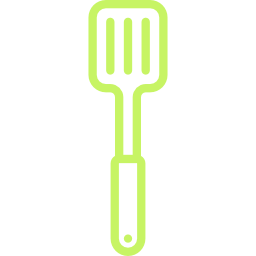

<ion-view view-title="Etape | Sel" ng-controller="SingleController"><!--creation d'une vue-->
    <ion-content scroll="false"><!-- permet de rendre la  vue non scrollable-->
        <!-- BACKGROUND GAUFRE -->

        <section class="page-ingre page-ingre-sel page-etape">

            <div class="bg-ingre ingre ingre-sel">
                <a ng-click="backView()" class="button icon-left ion-chevron-left button-clear button-ligth ion-ios-arrow-thin-left">
                </a>
                <h2 class="text-center">{{single.titre}}</h2>
            </div>

            <div class="row"></div>

                <div class="content content-etape">
                    <h3 class="text-center">ETAPE</h3>
                    <div class="row content">
                        <div class="col-10"></div>
                        <div class="col-80">
                            <ion-item ng-repeat="etape in etapes track by $index">
                                <div class="row content-detail">
                                    
                                    <p>{{etape}}</p>
                                </div>
                            </ion-item>
                        </div>
                        <div class="col-10"></div>
                    </div>
                </div>

            <a class="start"> TERMINE ! </a>

        </section>
    </ion-content>
</ion-view>